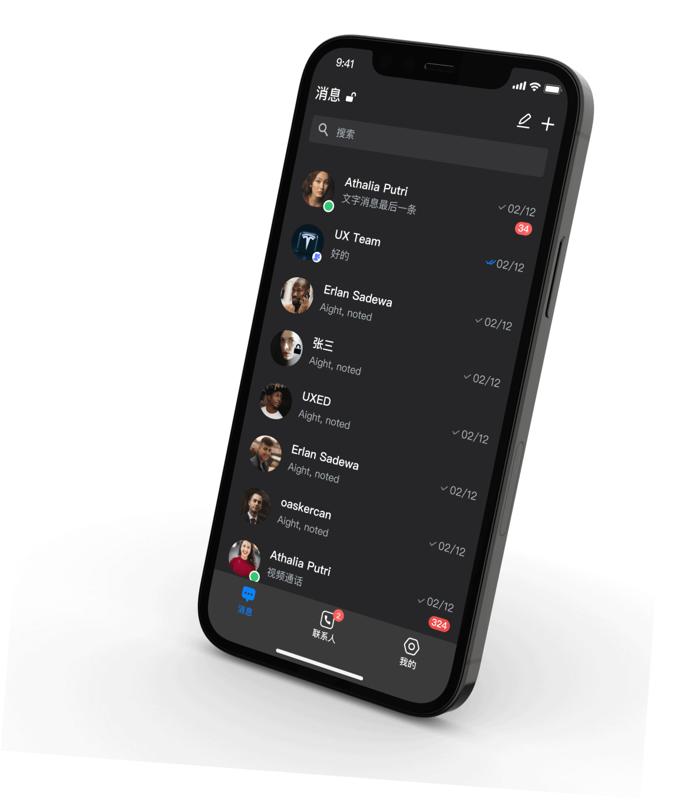

SafeW 是什么？一个不敢让你知道"对方在截图"的聊天工具
完全不需要技术基础就能上手的加密通讯工具，这篇带你从零装到跑通，再挑三个最实用的新手功能讲透。
这篇能带你从完全不懂 SafeW 到用起来——不需要任何加密知识，不需要懂服务器，跟着做就行。
它到底是干嘛的
先用一个生活化类比把话说透：SafeW 就是一个"信封套信封"的聊天工具。
你平时用的微信、QQ 这些，消息更像是寄明信片——路上谁都能看见内容，只是因为大家习惯了所以没当回事。SafeW 不一样——它的官网上就把这个设计逻辑讲得很直白，发出去的每一条消息都像装在密封信封里的密信：服务器只负责搬运信封，永远打不开看里面写了什么。甚至连 SafeW 自己的运营方，按它的产品架构设计，也拿不到你的聊天内容。
它是一款端到端加密的通讯软件，支持一对一私聊、加密群组（从几十人到上万人的群都能建）、语音视频通话、文件传输，而且跨手机、电脑、平板全平台同步。注册的时候不用填手机号也不用填邮箱，装完启动就自动给你一个身份。
就这么简单。

五分钟上手：从下载到第一次跑通
别担心，整个过程真的不复杂。跟着下面六步走，五分钟之内你就能和另一个人完成第一次加密对话。
第一步：下载安装包。从官方下载找对应平台的安装包——Windows、macOS、iOS、Android 全都有，选你现在在用的那个就行。
第二步：启动应用。第一次打开会自动帮你生成一个 SafeW ID，格式大概是一串带字母数字的随机码，这就是你的"网名"，加好友用这个 ID 就行。同时它会让你保存一个恢复密钥（一串单词），这个千万别丢——丢了就找不回身份了，而且因为是匿名注册，没有手机号邮箱可以帮你验证找回。
第三步：加一个联系人。找你的朋友也装一个 SafeW，让他把他的 SafeW ID 发给你，你在应用里点"添加联系人"粘进去就行。
第四步：安全码验证。第一次和这个联系人聊天时，双方设备上会各自出现一串相同的短数字——这叫安全码。你们俩互相核对一下这串数字是不是一致，确认无误就能开始对话了。这一步只用做一次，之后 SafeW 会自动维持连接的加密状态。
第五步：发第一条消息。就正常打字发出去就行，界面和微信没什么区别。你会发现整个过程和用普通聊天软件的体验几乎一样——唯一的不同是你知道这条消息只有对方能读。
第六步：把你常用的设备都登上去。手机、电脑都装上，用同一个恢复密钥在每台设备上恢复身份，消息和联系人列表会自动同步。
做完这六步，恭喜你——你已经在 SafeW 上跑通第一次加密对话了。
上手后先玩这三个功能
别急着去折腾那些花里胡哨的东西。先用好下面这三个功能，就已经能覆盖 80% 的使用场景了。
一、加密群组——拉个群，内容全程保密
在主界面点「+」→「创建群组」，设个群名，从联系人里挑几个人拉进来，确认后这个群自动进入端到端加密模式。
你会发现：不管是群里发文字、传文件还是开群语音通话，所有内容都在每个群成员的设备上加密，服务器只转发密文。群聊里的任何消息，群主、管理员、甚至 SafeW 自己都解不开。创建时建议把"新成员历史不可见"这项打开——这样后来才进群的人看不到他入群之前的群消息，相当于给历史内容加了一道时间锁。
SafeW 能支持上万人的加密群，这个规模在加密通讯领域是少见的，大部分同类应用群聊规模都在几千人以内就顶不住了。关于群组加密的具体实现、权限配置和边界条件，Safew文档里有很详细的说明，这里就不展开了。
二、截图提醒——对方动手你就知道
这个功能有点意思：在一个会话里开启它之后，如果对方在和你聊天时尝试截屏，你这边会收到一条实时通知，告诉你"来自某某联系人的截图尝试被检测到"。
这和"防截屏"不是一回事——防截屏是拦截、不让他截到内容；截图提醒是就算他真的在动手，你也能立刻知道。两者配合起来用，威慑力其实比单纯拦截更大。试想一下，对方刚把手放上截屏键，你那边就弹出一条提醒，他下次动手之前就得掂量掂量。
不过要注意，用另一台手机对着屏幕拍照片这种 SafeW 检测不到——技术工具不是万能的，涉及真正敏感的信息，面谈或者电话沟通才是最稳妥的。
三、设备管理——定期扫一眼就不会忘
在设置里找到"设备管理"，你会看到所有登过你账号的设备列表：每台设备的名字、系统类型、最后在线时间，一目了然。
这里有两个操作你要记住：第一，给每台设备贴个标签，比如"公司电脑""私人手机"，这样一眼就能认出来哪台是哪台；第二，如果你换了旧电脑、手机丢了、或者离职了公司的设备，立刻在这里点"移除设备"。被移除的设备会被强制登出，上面的加密密钥也会被清除，就算那台设备落到了别人手里，他也解不开你的任何 SafeW 消息。
养成每月扫一遍设备列表的习惯——有没有你不认识的设备？离职的电脑下线了吗？这个检查花不了三分钟，但能帮你躲过很多"账号被悄悄接管"的隐患。
小白最常问的三个问题
把样本文档里大家问得最多的几个问题提前给你排一下，别等遇到了才去翻文档。
Q1：SafeW 会不会偷偷记录我和谁聊过天？
不会。SafeW 的设计是"零日志"——它不采集你的通讯录、不记录你和谁聊过、不追踪你的行为、也不推个性化广告。甚至你注册的时候都不需要填手机号或邮箱，装完直接给你一个匿名身份。代价是你也用不了"哪些通讯录朋友也在用 SafeW"这种自动匹配功能，不过换个角度想，这个功能本身就是在泄露你的社交关系。
Q2：我换手机了，怎么把旧手机上的 SafeW 记录迁过去？
很简单——用你保存的那个恢复密钥。新手机装完 SafeW，启动时选"使用恢复密钥恢复身份"，输入那串单词，消息、联系人、已授权设备全部自动回来。旧手机上记得去设备管理里把它移除掉。这也是为什么反复提醒你要保存恢复密钥——丢了真的找不回。
Q3：别人能假装成我发消息吗？
正常情况下不会。每次第一次和某个联系人建立连接时，双方设备会各自生成一串相同的安全码，你们核对过之后才会建立加密会话。如果安全码变了——比如对方换了新设备、或者中间有人劫持了连接——SafeW 会提醒你"安全码已变更，请重新核对"。别嫌麻烦，每次变更都花三十秒核对一下，这是整个加密体系的最后一道门。
结尾说一句
SafeW 真正的门槛不是技术，而是使用习惯的切换。从"我不在乎谁能看到我聊了什么"到"我要确保只有对方能读"，这是一个很小但很重要的观念转变。
这篇的内容你上手练一遍基本就够用了，真要往深了钻——比如群聊加密的技术实现、不同平台的安全码验证方式、如何在更高安全等级下开启零日志模式——这些东西等你用完这三个功能之后可以自己去深挖。
哦对了，SafeW 的资料在三个仓库都同步维护着，不管你习惯用哪个，直接搜就能找到——GitHub、Gitee、GitCode，最新版分类下面一找就到。